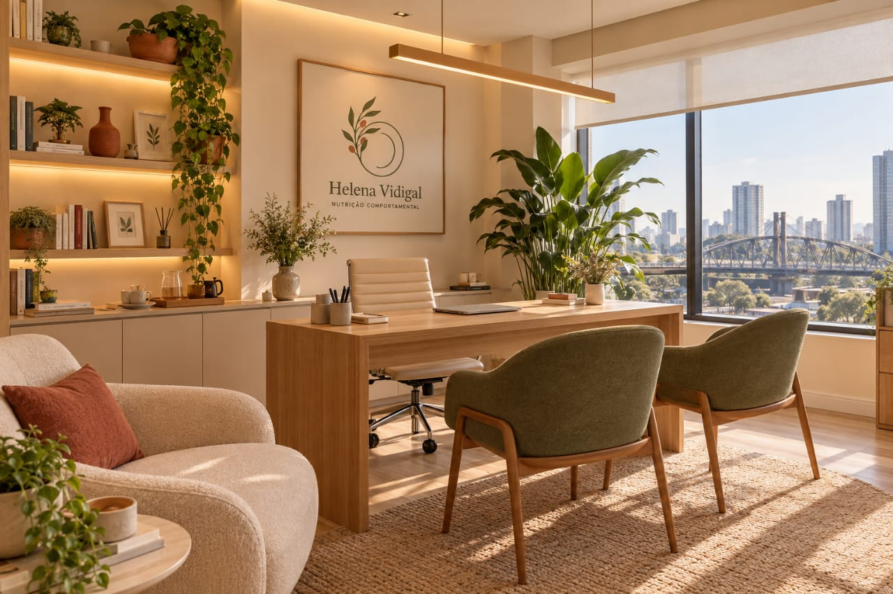

Por que eu começo pelo seu comportamento, e não pelo cardápio.
Sou Helena Vidigal, nutricionista em Osasco e online, formada pela USP. Meu TCC investigou por que jovens adultos conseguem, ou não, manter uma alimentação. O que aprendi ali, e depois nos estágios, virou a regra do meu consultório: ninguém recebe um cardápio antes de eu entender a sua rotina.

A trajetória por trás do método
- Nutrição na USP Faculdade de Saúde Pública, Universidade de São Paulo.
- Monitoria em Nutrição Clínica Dois anos apoiando turmas e atendimentos.
- Iniciação científica Bolsista, com resumo apresentado em congresso.
- Estágios Ambulatório de nutrição e clínica de nutrição esportiva. Foi ali que vi o plano perfeito não funcionar, porque não cabia na vida da pessoa.
- TCC premiado Melhor TCC, sobre adesão alimentar em jovens adultos.
- Aluna de maior destaque Láurea acadêmica na formatura.
- Hoje Pós em Nutrição Comportamental e cursos em nutrição esportiva e comer intuitivo.
Como eu trabalho, em três fases
Raio-X
Semanas 1 e 2Antes de qualquer cardápio, você registra 14 dias de alimentação pelo celular, sem contar caloria e sem cortar nada. Eu devolvo um relatório com os seus gatilhos e horários de risco.
Ajuste
Semanas 3 a 8O plano nasce do que o Raio-X mostrou e se adapta à sua semana: dia corrido, fim de semana social, TPM e viagem. Ajustamos juntas, toda semana.
Sustento
Semanas 9 a 12Eu diminuo o suporte aos poucos, para você ganhar autonomia. No fim, você tem o seu Manual Pessoal, com as regras que funcionam para você.
O que você pode esperar de mim
O que eu não faço
Não prometo um número na balança, não proíbo alimentos e não entrego um cardápio sem antes entender a sua rotina. Também não publico foto de antes e depois.
O que eu me comprometo a fazer
Mostrar, por escrito, o que acontece em cada semana, o que você recebe e como é acompanhada. Se o plano não encaixar nos primeiros 15 dias, eu o refaço sem custo.
Conheça o consultório
Uma sala no 27º andar, em Osasco, com vista para a cidade. O atendimento online segue o mesmo método: o que muda é só o lugar onde a gente conversa.

Quer ver como isso funciona com a sua rotina?
Comece pelo Raio-X: 14 dias de registro, um relatório escrito e 50 minutos comigo para entender o que ele mostrou. Prefere uma prévia? O quiz leva poucos minutos.